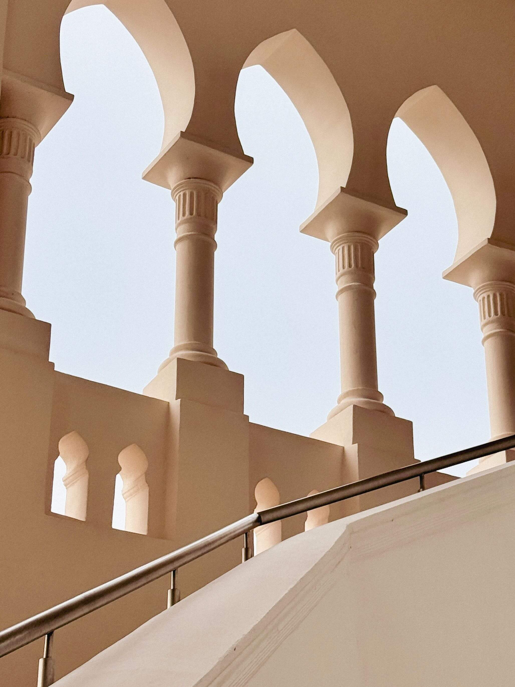
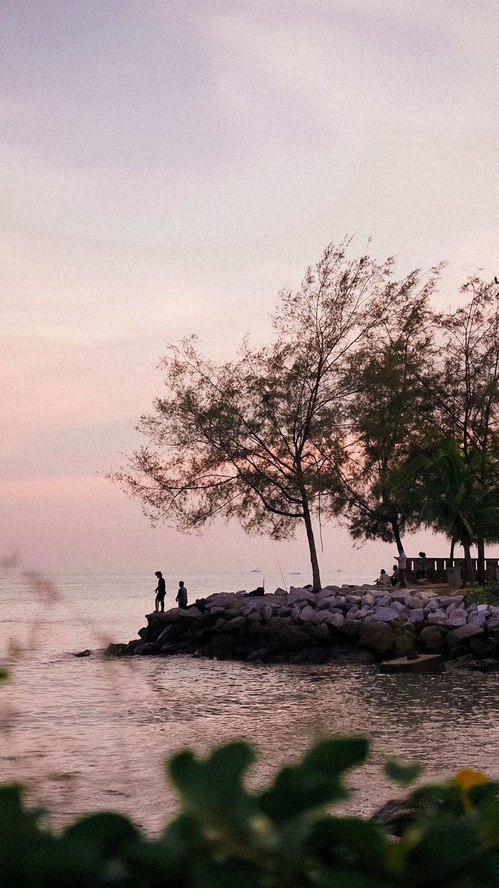
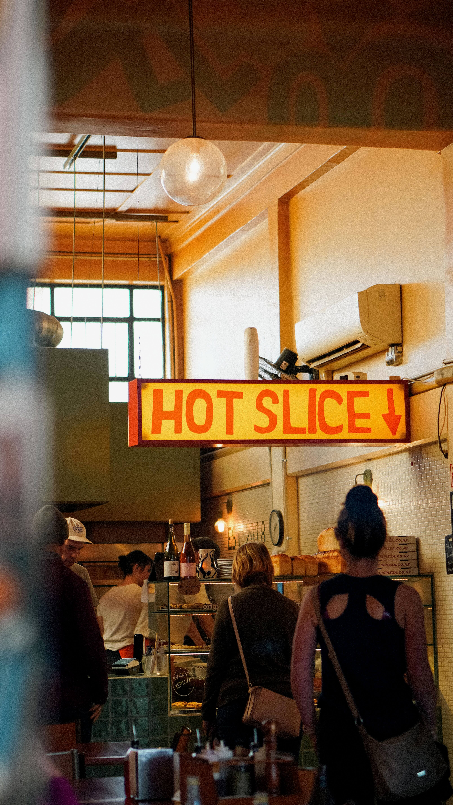
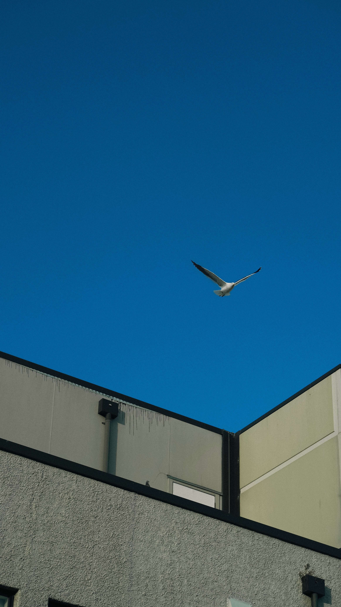
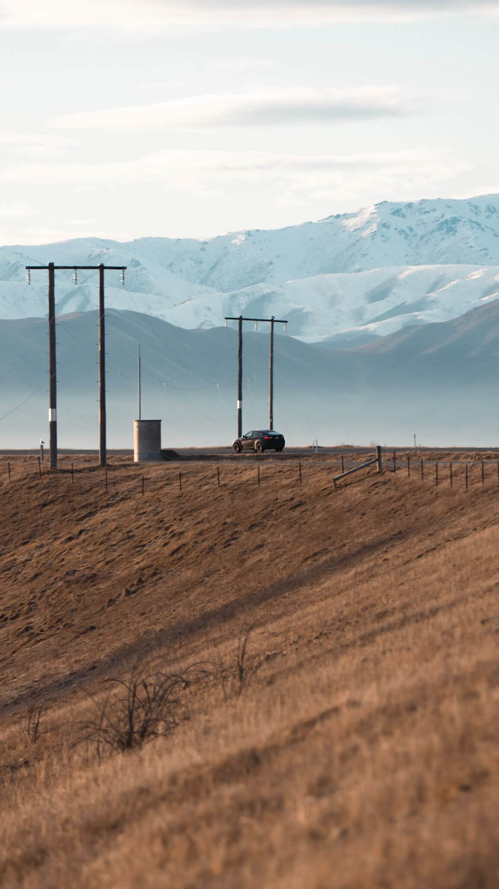
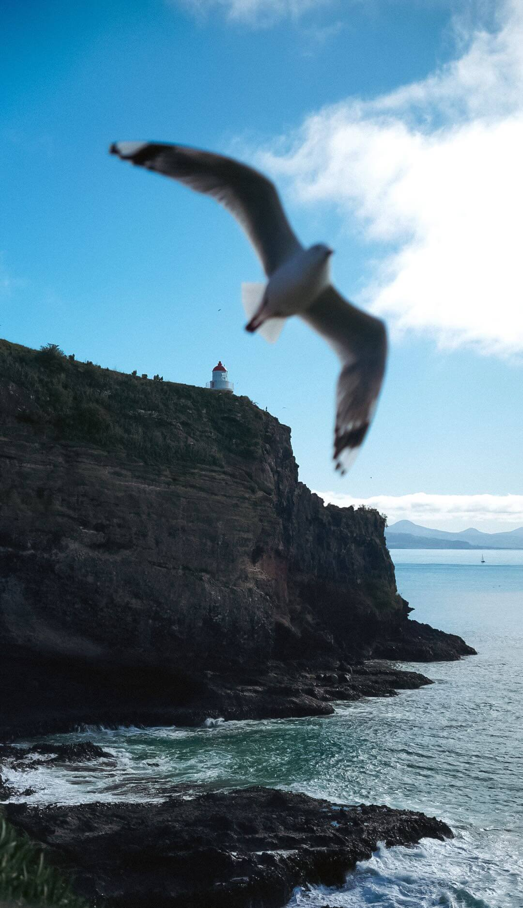

Photography攝影集
Picked up photography in 2023, mostly by accident. One chance to hold a camera and I was hooked. Started with a Sony a6400 and a 50mm 1.8, still shooting the same camera but now paired with a Sigma 18-50mm f/2.8. Wouldn't call myself a photographer, just someone who loves capturing the moment. 2023那年，我意外地踏入了攝影的世界，從此愛上了用鏡頭記錄當下、捕捉瞬間的樂趣。一開始我使用的是 Sony a6400 搭配 50mm f/1.8 鏡頭。直到到現在，我依然愛用這台相機，只是換成了 Sigma 18-50mm f/2.8 鏡頭，讓我的拍攝更具彈性。不會稱自己為攝影師，我只是個熱愛攝影，享受透過鏡頭探索世界、捕捉美好瞬間的過程的普通人。
Instagram




